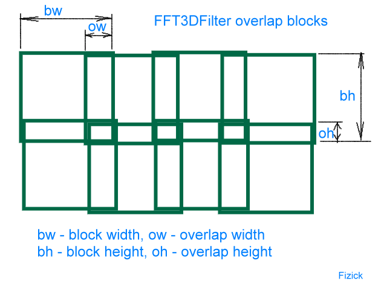

FFT3DFilter
Plugin for Avisynth 2.6 and Avisynth+
Copyright (C)2017-2021 v2.10: high bit depth and planar rgb support on Avisynth+ (10-16 bits and float) by pinterf
Based on version 2.2
Copyright (C)2017 martin53 doom9.org forum member, with kind permission of Fizick
Based on Version 2.1.1, which is
Copyright (C)2004-2007 Alexander G. Balakhnin aka Fizick
http://avisynth.org.ru
FFT3DFilter is 3D Frequency Domain filter - strong denoiser and moderate sharpener.
Technical info
FFT3DFilter uses Fast Fourier Transform method for image processing in frequency domain.
It is based on some advanced mathematical algorithmes of optimal filtration.
It works not locally, but makes some delocalized (block) processing.
In 3D mode, it results in effect similar to partial motion compensation.
This filter can reduce noise without visible quality loss and artefactes,
even with quite strong settings.
It can greatly improve compression and reduce encoded file size.
Also it has option of limited sharpening without both noise amplifying and oversharpening (haloing).
Fiction? Try it yourself! :)
So, it is a spatial-temporal (3D) filter, and works as follows:
- get current and some previous frames;
- divide every frame to small overlapped blocks;
- get frequency spectrum by windowed forward 2D FFT transform of every block
of these frames;
- apply some filter to frequency spectrum;
- optionally sharpen image (in 2D frequency domain) by amplifying of some frequencies;
- make inverse 2D FFT transform of cleaned spectrum for every block;
- do windowed summation of cleaned overlapped blocks to output frame.
Overlapped blocks and weighting windows are used to prevent blockiness (and ringing).
The blocks are overlapped by some value along their vertical and
horizontal sizes.
The lesser overlap, the faster processing, but with more visible grid artifactes.
The overlapping definition is shown on picture.

Some analysis and synthesis weighting windows are used to get effective
signal gain=1 after blocks summation.
Plugin has several processing modes at filter stage:
- (Parameter bt=1)
2D (spatial) Wiener filter for spectrum data. Use current frame data only. Reduce
weak frequencies (with small power spectral density) by optimal Wiener
filter with some given noise value. Sharpening and denoising are
simultaneous in this mode.
- (Parameter bt=2)
3D Wiener filter for spectrum data. Add third dimension to FFT by using
previous and current frame data. Reduce weak frequencies (with small
power spectral density) by optimal Wiener filter with some given noise
value.
- (Parameter bt=3)
Also 3D Wiener filter for spectrum data with
previous, current and next frame data.
- (Parameter bt=4)
Also 3D Wiener filter for spectrum data with
two previous, current and next frame data.
- (Parameter bt=5)
Also 3D Wiener filter for spectrum data with
two previous, current and two next frames data.
- (Parameter bt=0)
Temporal Kalman filter for spectrum data. Use all previous frames data
to get estimation of cleaned current data with optimal recursive data
process algorithm. The filter starts work with small (=1) gain (degree of
noise reducing), and than gradually (in frames sequence) increases the
gain if inter-frame local spectrum (noise) variation is small.
So, Kalman filter can provide stronger noise reduction than Wiener filter.
The Kalman filter gain is limited by some given noise value.
The local gain (and filter work) is reset to 1
when local variation exceeds the given threshold
(due to motion, scene change, etc). So, the Kalman filter output is history-dependent
(on frame taken as a start filtered frame).
Using noise pattern
Since v1.5 it is possible to get noise pattern (shape)
by spectrum analysis of some empty block (without any objects),
and then to reduce the noise with the same pattern in whole frame and in whole clip.
It may be useful for removal of film (especially amateur 8 mm) grain and analog TV capture interference.
Sharpening
At sharpening stage (after denoising) the plugin amplifies high spectrum (spatial, 2D) frequencies .
There is also sharpen-only mode without denoising (bt=-1).
Since version 1.1, some special limited sharpening method is used :
- the weakest frequencies (with small amplitudes) are not amplified
to prevent noise increasing;
- the strongest frequencies (with large amplitudes) are not amplified
to prevent oversharping and haloing.
The sharpening strength is maximal for frequencies with middle-range amplitudes.
Of course, you can control both these margins and general sharpening strength.
Since v.1.7, Gaussian High Pass Filter with variable cutoff frequency is used for sharpening.
Since v.1.9, plugin has special option dehalo for decreasing of strong frequencies,
it may be used for spatial adaptive softening of oversharped pictures (halo removal).
This mode may be combined with denoising and sharpening.
Syntax
FFT3DFilter(clip,
float "sigma", float "beta", int "plane", int "bw", int "bh", int "bt", int "ow", int "oh",
float "kratio", float "sharpen", float "scutoff", float "svr", float "smin", float "smax",
bool "measure", bool "interlaced", int "wintype",
int "pframe", int "px", int "py", bool "pshow", float "pcutoff", float "pfactor",
float "sigma2", float "sigma3", float "sigma4", float "degrid",
float "dehalo", float "hr", float "ht", int "ncpu")
All parameters are named.
Function parameters:
first parameter - input clip
sigma
- given noise value for all (or highest) frequencies (float>0, default=2.0)
beta
- noise margin (float>=1.0, default=1.0 for no noise left):
control noise amount left in the restoration for Wiener
filter, so max filter noise attenuation =
(beta-1)/beta.
plane - processed color plane: 0 - luma(Y), 1 - chroma U, 2 - chroma V,
3 - chroma planes U and V, 4 - both luma and chroma (default = 0)
bw
- block width (integer, default = 48 since v.1.2)
bh
- block height (integer, default = 48 since v.1.2)
bt
- block temporal size, number of frames (-1, 0, 1, 2 or
3, default = 3):
0 - all previous frames (switch Kalman filter mode);
1 - only current frame (spatial 2D Wiener filter);
2 - previous and current frame (3D Wiener filter);
3 - previous, current and next frame (3D Wiener filter)
4 - two previous, current and next frame (3D Wiener filter)
5 - two previous, current and two next frames (3D Wiener filter)
-1 - sharpen only (2D);
ow - overlap width (default=bw/3 since v.1.2)
oh - overlap height (default=bh/3 since v.1.2)
kratio
- ratio of threshold to sigma to reset Kalman filter (default = 2.0):
variation threshold = sigma*kratio,
good value is about from 1.5 to 3.0;
sharpen
- sharpening strength (default=0 - not sharpen)
good values about 0.3 to 1.0 (negative values results in
reverse effect)
scutoff
- sharpening cutoff frequency, relative to max (default=0.3)
svr
- sharpening (and dehalo) vertical ratio (to horizontal) (default=1.0 - same as horizontal, 0 - no vertical sharpening)
smin
- minimum limit (approximate noise margin) for sharpening stage (default=4.0)
smax
- maximum limit (approximate oversharping margin) for sharpening stage (default=20.0)
measure
- select the most optimal (fastest) FFT method by speed measure (with
longer init stage)
instead of simple estimation (default=true since v.0.9.2)
interlaced
- separate fields processing (default=false)
wintype
- weighting windows type (default=0):
0 - same analysis and synthesis half-cosine window, used in all versions before 1.4;
1 - intermediate between 0 and 2;
2 - flat analysis window, rised cosine (Hanning) synthesis window.
pframe
- noise pattern frame number (default=false)
px
- noise pattern block horizontal X position (default=0)
py
- noise pattern block vertical Y position (default=0)
if px=px=0, then the pattern block is defined automatically with minimal power spectral density.
pshow
- show noise pattern block and its properties (default=false)
pcutoff
- noise pattern cutoff frequency (relative to max) (default=0.1)
pfactor
- noise pattern denoise strength (0 to 1.0, default=0, this method disabled)
sigma2
- given noise value at second scale level frequencies (float>0, default=sigma)
sigma3
- given noise value at third scale leveä frequencies (float>0, default=sigma)
sigma4
- given noise value at lowest frequencies (float>0, default=sigma)
degrid
- weighting window compensation degree for grid decreasing (float>0, default=1.0)
dehalo
- halo removal strength (float>0, default=0.0)
hr
- halo approximate radius (float>0, default=2.0)
ht
- halo approximate threshold (float>0, default=50.0)
ncpu
- max number of CPU threads to use for FFT calculation (int>0, default=1)
The most important parameter is a given noise value sigma.
You must use reasonable value based on a priori info for current clip.
Typical value for digital sources is about 1.5 to 2.5, and about 3 and above for analog captured video.
The good value of overlapping size is about quarter to half of block size.
The half (ow=bw/2, oh=bh/2) is the best, but slower.
Good values of block size are about 32 to 64.
Filter can produce some grid artifacts for large sigma
and small bw, bh, ow, oh or small relative overlap sizes, especially with sharpening enabled.
Filter can produce ghosting for large sigma (and kratio) for 3D modes.
Weighting window wintype=0 can produce the worst grid artifactes,
window type wintype=2 do not produce grid artifactes, but can produce some ringing,
wintype=1 is intermediate case.
I recommend to use the weighting window compensation with degrid=1 (since version 1.8),
it improves the denoise quality and decreases the grid artifactes, especially for 2D.
Sharpening will result in worse clip compression.
In order to use noise pattern method in place of ordinary (blind) method you must:
Firstly switch show mode pshow=true, and set some non-zero value pfactor=1.0.
Then select frame number and some block position,
thus the block shown must not contain any objects beside typical noise pattern.
The switch off show mode pshow=false,
and set noise reduction strength, recomended value pfactor= 0.5 to 1.0.
The best windows type for this method is wintype=2.
The sigma and beta parameters are not used in this denoising method,
but you can use this method in show mode pshow=true
to estimate sigma value for ordinary denoising method
(it is not strictly the same, but similar value).
There is also composite method, when you can directly set different noise values
sigma for highest and sigma2, sigma3, sigma4 for lower frequencies.
The pattern coefficients will be created internally from these sigmas values by interpolation.
Set pfactor=0 for this method (internally it will be =1).
Features and limitations
- Filter works only in YV12 or YUY2 color format.
- Only specified single color plane may be processed (Y, U or V).
Since v1.8.4 it is possible to process several (all) color planes.
- Since v1.3 it works with both progressive and interlaced clips.
- Tested with Avisynth v2.55, v2.56.
- Filter uses fast external FFTW library version 3 (http://www.fftw.org)
as Windows binary DLL (compiled with gcc under MinGW by Alessio Massaro),
which support for threads and have AMD K7 (3dNow!) support in addition to SSE/SSE2.
It may be downloaded from
ftp://ftp.fftw.org/pub/fftw/fftw3win32mingw.zip
You MUST
put FFTW3.DLL file from this package (not fft3dfilter.dll) to some directory in path (for example, C:\WINNT\SYSTEM32).
Filter will NOT work without it!
- FFTW works most efficiently for arrays whose size (bw, bh)
can be factored into small primes 2, 3, 5, and 7 (and one 11, 13), and
otherwise it uses a slower general-purpose routine.
- First versions were really slooow! But recent
versions are simple slow :-).
Algorithm is improved and assembler 3DNow! and SSE instruction are used for some modes
- Algorithm is optimized by speed for forward sequential frames access only.
- The sharpening method is experimental, however is quite good since v1.1 (and v1.7).
- The noise pattern method is experimental too.
- degrid option is not implemented for Kalman filter.
- For noisy video it is useful to use median prefilter (for example DeGrainMedian)
before FFT3Dfilter.
- Multithread mode ncpu>1 is almost not tested (I do not have core duo), try to use ncpu=2 if you have.
Simple sample scripts
To denoise progressive or fieldbased (separated) clip luma:
Avisource("input.avi")
loadplugin("c:\plugins\fft3dfilter.dll")
FFT3DFilter(sigma=3)
Of course, you must replace "c:\plugins" by your plugins folder path (and set your video pathname too :).
You can skip LoadPlugin command if you put fft3dfilter.dll file to autoloading plugins folder
(C:\Program Files\Avisynth 2.5\plugins).
To sharpen only:
Avisource("input.avi")
loadplugin("fft3dfilter.dll")
FFT3DFilter(bt=-1, sharpen=0.7)
To denoise and slightly sharpen the interlaced clip:
Avisource("input.avi")
loadplugin("fft3dfilter.dll")
FFT3DFilter(sigma=2, sharpen=0.3, interlaced=true)
Some "best settings", slower processing
Avisource("input.avi")
loadplugin("fft3dfilter.dll")
fft3dfilter(sigma=1.5, bt=5, bw=32, bh=32, ow=16, oh=16, sharpen=0.4)
To denoise all color planes (both luma and chroma)
Note: The processing speed will be decreased more,
so you can consider other (simpler and faster) filters using for chroma denosing
(CNR2, DeGrainMedian, etc).
To denoise all color planes with same settings
Avisource("input.avi")
loadplugin("fft3dfilter.dll")
fft3dfilter(sigma=2, plane=4)
To denoise luma and chroma with different settings
Avisource("input.avi")
loadplugin("fft3dfilter.dll")
fft3dfilter(sigma=1.5, plane=0)
fft3dfilter(sigma=3, plane=3)
Other way to denoise all color planes (script by AI)
It was important in old versioms if you use motion compensation
Avisource("input.avi")
loadplugin("fft3dfilter.dll")
YToUV(fft3dfilter(sigma=3, plane=1).UToY,\
fft3dfilter(sigma=3, plane=2).VToY,\
fft3dfilter(sigma=2, plane=0))
To decrease the existing horizontal halo only
Avisource("input.avi")
loadplugin("fft3dfilter.dll")
fft3dfilter(bt=-1, plane=0, dehalo=1.0, hr=2.0, ht=50, svr=0)
More info
The algorithm of Wiener filter is based on the 3D IIR/3D Frequency Domain Filter from:
MOTION PICTURE RESTORATION. by Anil Christopher Kokaram. Ph.D. Thesis. May 1993.
http://www.mee.tcd.ie/~ack/papers/a4ackphd.ps.gz
in postscript format (use GSview with Ghostscript to read).
Search more info about Wiener and Kalman filters in special literature
or Googles.
Filter discussion is at DOOM9 Avisynth forum, thread
"New very slow FFT denoiser:"
http://forum.doom9.org/showthread.php?t=85790
There is also FFT3DGPU plugin (by tsp) with similar
algo, but using modern videocard processor for FFT.
Tsp ported many fft3dfilter features.
See http://forum.doom9.org/showthread.php?t=89941.
License
This program is free software; you can redistribute it and/or modify
it under the terms of the GNU General Public License version 2 as published by
the Free Software Foundation.
This program is distributed in the hope that it will be useful,
but WITHOUT ANY WARRANTY; without even the implied warranty of
MERCHANTABILITY or FITNESS FOR A PARTICULAR PURPOSE. See the
GNU General Public License for more details.
You should have received a copy of the GNU General Public License
along with this program; if not, write to the Free Software
Foundation, Inc., 675 Mass Ave, Cambridge, MA 02139, USA.
Documentation is distributed under CreativeCommons BY-SA 3.0 license.
Please consider to make some donation.
Version changes:
- Version 0.1, November 23, 2004 - initial experimental.
- Version 0.2, December 3, 2004 - added beta
parameter (noise margin).
- Version 0.3, December 21, 2004 - added block temporal size
parameter bt (was fixed =3 internally).
- Version 0.4, January 16, 2005 - optimized algorithm for speed for bt=2
(now default),
mode bt=3 is temporary disabled,
changed default bw=bh=32,
filtered region now is centered.
- Version 0.5, January 28, 2005 - added YUY2 support.
- Version 0.6, January 29, 2005 - added Kalman filter mode for bt=0,
and ratio parameter
- Version 0.7, January 30, 2005 - re-enabled Wiener
filter mode with 3 frames (bt=3);
first and last frame in Wiener 3D mode now filtered (as 2D)
- Version 0.8, February 5, 2005 - added experimental sharpen
option and bt=-1
- Version 0.8.1, February 6, 2005 - skip sharpening of the
lowest frequencies to prevent parasitic lines near borders
- Version 0.8.2, February 15, 2005 - added internal buffer to
process whole frame (borders included) for any bw, bh (a little slower)
- Version 0.8.3, March 16, 2005 - fixed sharpen mode (bt=-1) for YUY2
- Version 0.8.4, April 3, 2005 - (not public) - delayed FFTW3.DLL loading
- Version 0.9, April 4, 2005 - variable overlapping size ow, oh for
more fast processing,
half overlapping ow=bw/4, oh=bh/4 is now default,
while full overlapping ow=bw/2, oh=bh/2 was used in all older versions.
- Version 0.9.1, April 7, 2005 - some assembler 3DNow! speed optimization
for mode bt=3.
- Version 0.9.2, April 10, 2005 - some assembler 3DNow! speed
optimization for mode bt=0,
option measure=true is now default as more fast.
- Version 0.9.3 - April 24,2005 - fixed bug for bt=2 with
3DNow! (thanks to kxproject for report);
mode bt=3 now default;
sharpen mode now is horizontal only and modified (still experimental)
- Version 1.0 - June 27, 2005 - improved frame edges processing (by padding);
added svr parameter to control vertical sharpening
- Version 1.0.1 - July 05, 2005 - fixed bug for chroma planes for YUY2 (introduced in v.1.0)
- Version 1.1 - July 8, 2005 - improved sharpening method to prevent grid artifactes and to limit sharpening
(added parameters smin, smax);
renamed parameter ratio to kratio.
- Version 1.2 - July 12, 2005 - changed default block sizes bw=bh=48
and overlap sizes ow=bw/3, oh=bh/3
to finally prevent grid artifactes in sharpen mode (but speed is decreased).
- Version 1.3 - July 20, 2005 - added interlaced parameter for interlaced video processing.
- Version 1.3.1 - July 21, 2005 - fixed bug for YUY2 interlaced.
- Version 1.4 - July 23, 2005 - corrected neutral level for chroma processing,
changed weighting window type with new wintype parameter
- Version 1.5 - July 26, 2005 - added noise pattern method
and its parameters pframe, px, py, pshow, pcutoff, pfactor
- Version 1.5.1 - July 29, 2005 - fixed bug with pshow
- Version 1.5.2 - July 31, 2005 - fixed bug with Kalman mode (bt=0) for Athlon (introduced in v1.5)
- Version 1.6 - August 03, 2005 - added mode bt=4; added optimized SSE version for bt=2,3;
added sigma2,sigma3,sigma4 parameters for composite method.
- Version 1.7 - August 29, 2005 - changed sharpening to Gaussian filter with new parameter scutoff;
added SSE version for sharpen mode and pattern modes bt=2,3 ;
restuctured and released code under GNU GPL v.2.
- Version 1.8 - October 3, 2005 - improved internal FFT cache; added degrid=1.0 parameter as default;
changed default wintype=0.
- Version 1.8.1 - October 26, 2005 - fixed bug with sharpen>0 AND degrid>0 for bt not equal 1.
(Thanks to Wull for report).
- Version 1.8.2 - 04 November 2005 - really set default degrid=1.0 (was = 0 accidentally).
- Version 1.8.3 - 28 November 2005 - fixed bug with first frame for Kalman YV12 (thanks to tsp).
- Version 1.8.4 - 29 November 2005 - added multiplane modes plane=3,4.
- Version 1.8.5 - 4 December 2005 - fixed bug with memory leakage (thanks to tsp).
- Version 1.9 - 25 April 2006 - added dehalo options; corrected sharpen mode;
re-enabled SSE optimization for degrid=0; added SSE optimization for bt=3,-1 with degrid>0
(faster by 15%)
- Version 1.9.1 - 10 May 2006 - added SSE optimization for bt=4 with degrid>0
(faster by 30%).
- Version 1.9.2 - 11 september 2006 - changed default bw=bh=32; added mode bt=5
- Version 2.0.0 - November 29, 2006 - added experimental internal motion compensation mode;
window reorganized; internal multithread support (Core duo, trio, quadro et cetera)
- Version 2.1.0 - January 17, 2007 - removed (temporary ?) experimental internal motion compensation mode.
- Version 2.1.1 - February 20, 2007 - fixed bug with bw not mod 4 (restored v1.9.2 method,
thanks to JKinG for report).
- Version 2.2 - February 25, 2015 - martin53: made AviSynth 2.6 ready, FFT3dFilter2_VersionNumber function, error msgs
- Version 2.3 - February 21, 2017
- apply current avs+ headers
- 10-16 bits and 32 bit float colorspace support in AVS+
- Planar RGB support
- look for libfftw3f-3.dll first, then fftw3.dll
- inline asm ignored on x64 builds
- pre-check: if plane to process for greyscale is U and/or V then returns original clip
- auto register MT mode for avs+: MT_SERIALIZED
- autoscale sigma and smin/smax parameter from 8 bit scale if colorspace is different
- Version 2.4 - June 08, 2017
- some inline asm (not all) ported to simd intrisics, helps speedup x64 mode, but some of them faster also on x86.
- intrinsics bt=0
- intrinsics bt=2, degrid=0, pfactor=0
- intrinsics bt=3 sharpen=0/1 dehalo=0/1
- intrinsics bt=3
- Adaptive MT settings for Avisynth+: MT_SERIALIZED for bt==0 (temporal), MT_MULTI_INSTANCE for others
- Copy Alpha plane if exists
- reentrancy checks against bad multithreading usage
Note: for properly operating in MT_SERIALIZED mode in Avisynth MT, please use Avs+ r2504 or better.
- Version 2.5 - July 02, 2018
- Change 32 bit float formar: U/V chroma center to zero instead of 0.5 to match Avisynth+ r2728
- Version 2.6 - January 31, 2019
- Fix: Proper rounding before internal 32 bit float data are converted back to integer pixel values
- Version 2.7 - November 30, 2020
- Fix: make fftw plans thread safe.
- preserve frame properties for avs+
- Version 2.8 - December 1, 2020
- Fix: chroma plane filtering for 32 bit float formats
- Version 2.9 - March 24, 2021
- Fix issue when pfactor <> 0 and using 10+ bits (Xinyue Lu, neo_FFT3D)
- Fix incorrect negative value float to integer rounding (Xinyue Lu, neo_FFT3D r7)
- add CMake build system
- linux build
- Replace never used 3dnow ApplyWiener3D4 with simd SSE2. (bt=4, degrid=0, pfactor=0) (2x speed)
- Version 2.10 - October 18, 2021
- Fix possible crash on exit on ncpu=1 (uninitialized fft3w threads)
- Fix C version (possibly unused on Intel builds, when CPU less than SSE2) in sharpen+degrid method